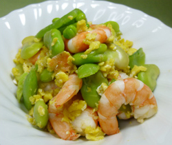

ムキエビと空豆の和え物
- 調理時間：20 分
- （一人当たり）
- カロリー：71kcal
- たんぱく質：7.9g
- 脂質：1.4g
- 塩分：1.3g


＜４人分＞
- ムキエビ
- 100g
- 卵
- 1個
- 塩
- 少々
- 砂糖
- 少々
- 梅肉
- 小さじ2
- 料理酒
- 大さじ2
- スナップエンドウ
- 50g
- 空豆
- 50g


- ムキエビは片栗粉（分量外）をまぶしてもみ洗いし、汚れを落とす。
- ボウルに卵、砂糖、塩を少々加える。フライパンに油をしき、炒り卵を作る。
- 小鍋に料理酒と梅肉を入れ火にかける。ムキエビを加えて木ベラで混ぜながら全体にからめ、色が変わるまでさっと煮る。
- 茹でたスナップエンドウと空豆を加える。
- ②の炒り卵を小鍋に移し、ざっくりと混ぜ合わせる。
ムキエビと空豆の和え物
5月の終わりごろから6月にかけては「走り梅雨」といわれ、天気もぐずつき、湿気が多くなり、だるい、疲れやすいといった症状が出やすい時期です。また漢方では、消化器系、胃腸器系に影響が出やすいといわれています。体調管理が難しいこの時期は、昔から多くの薬効がいわれる梅干しを食べて乗り切りましょう。
梅干しを見ただけで思わず唾液が出てくるという経験はありませんか。これは梅干しのクエン酸が消化管を刺激し、消化液の分泌を促進させるから。梅干しは、唾液、胃液の分泌を促し、胃腸の働きを活発にします。さらに強力な酸は疲労回復や殺菌、防腐作用があり、食中毒のでやすい梅雨時にはうってつけ。薬効を期待するなら断然昔ながらのしょっぱい梅干し。今回のレシピのように調味料に使うのもおススメです。